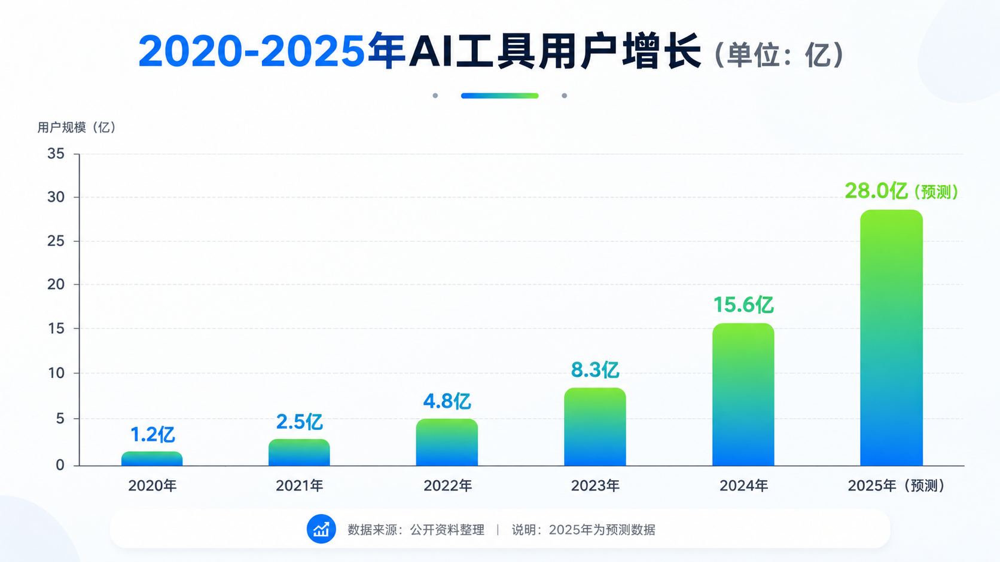
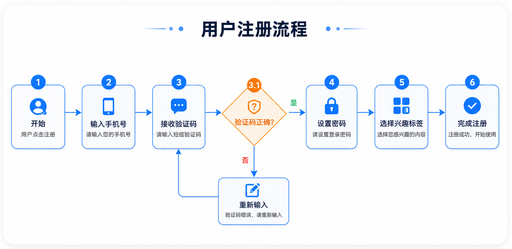
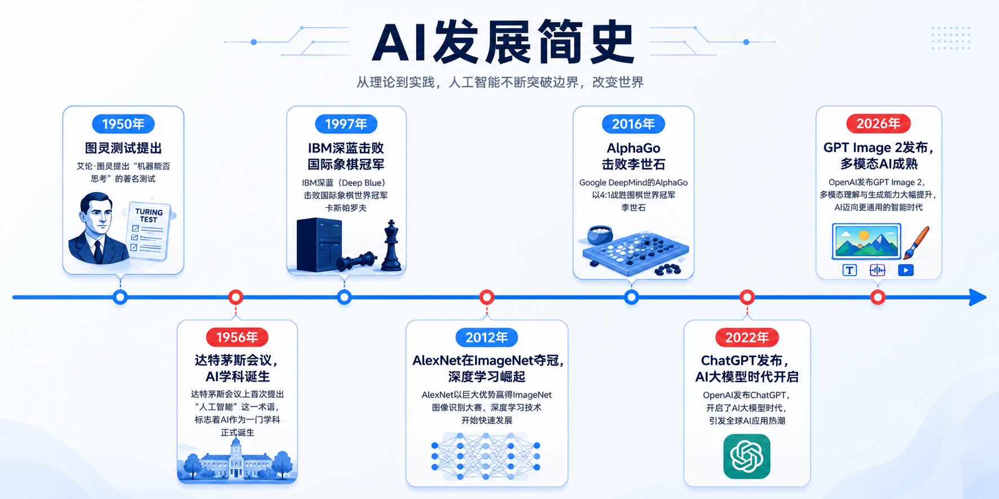
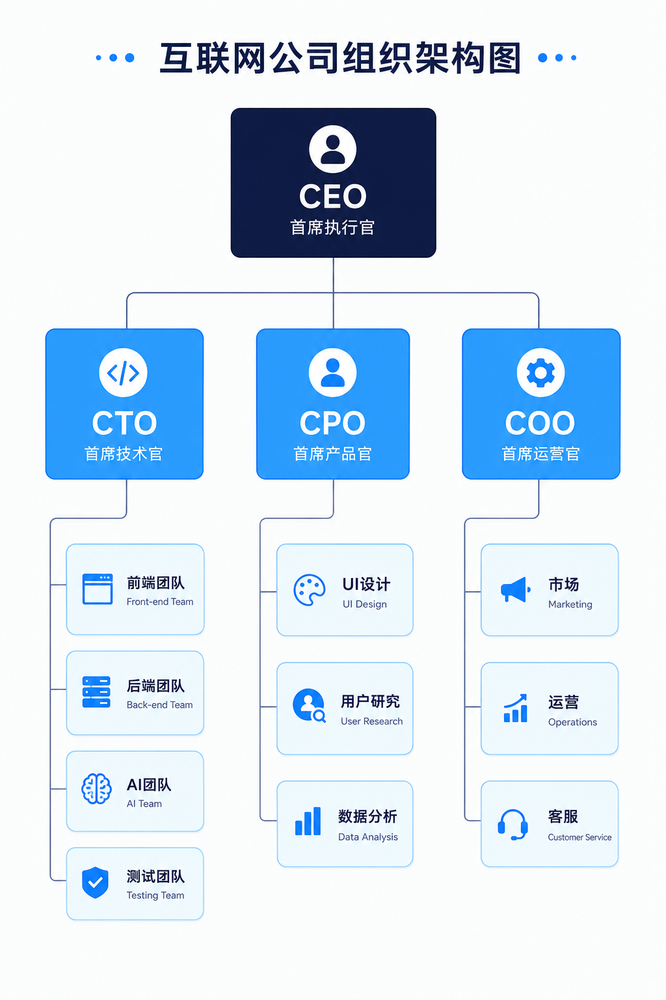
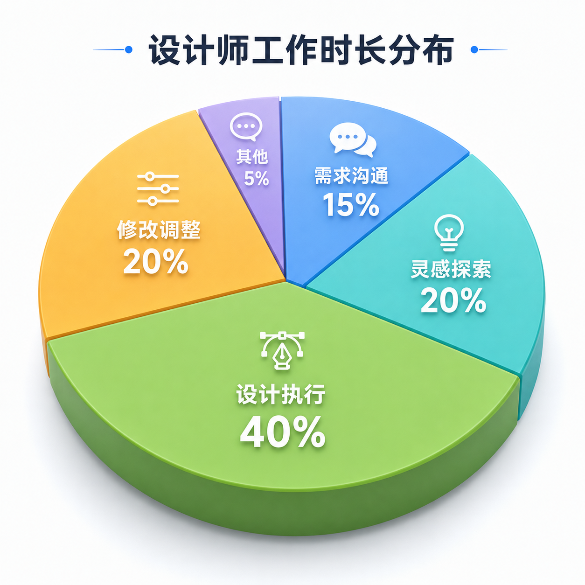
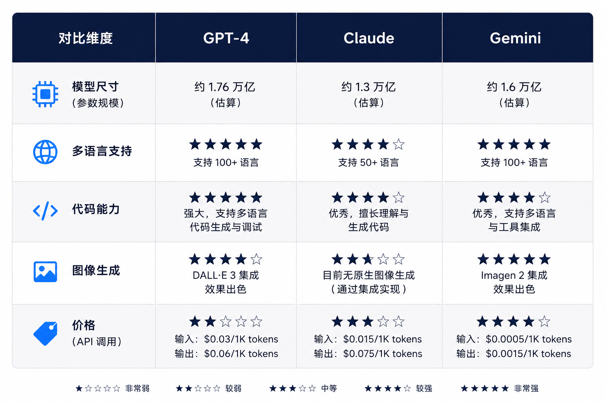
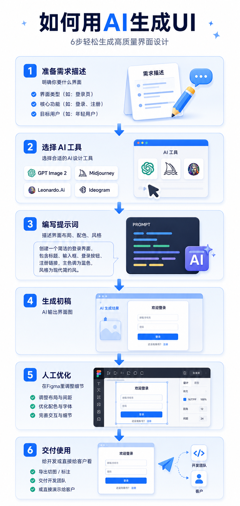
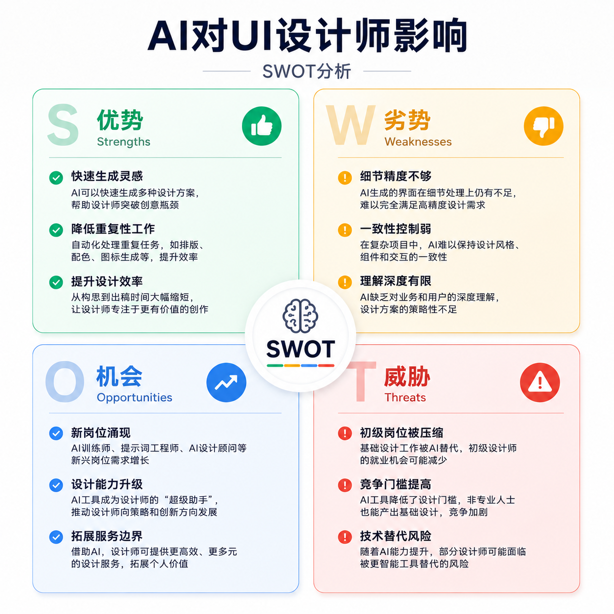

The Pain Point
Consultants and data analysts often face this dilemma:
Boss says "make a chart with this data for the PPT," so you open Excel, insert a chart, and find — it looks ugly.
Then you open Canva, find a template, change the data, adjust colors,折腾一小时 (fuss for an hour).
When GPT Image 2 came out, my first thought was: Can it generate infographics directly?
GPT Image 2's biggest infographic advantage is "fast" and "doesn't look bad." But if you need "precise data communication," manual verification is still needed.
Case 01: Data Comparison Chart
AI Tool User Growth 2020-2025 Bar Chart

What worked: Bar chart generated. 6 bars present, gradient blue correct. Values labeled above bars.
What didn't work: Value labels font slightly small — may be hard to read in PPT. "2020-2025" year labels slightly crowded. Gradient coloring achieved but somewhat conflicts with "modern clean" style — gradients can feel less professional.
Conclusion: Data comparison generation: GPT Image 2 achieves 60-70%. Good for "internal discussion charts," not for direct client proposals.
Case 02: Flowchart Generation
User Registration Flowchart

What worked: Flowchart generated. All 6 steps drawn. Decision nodes (verification code correct?) using diamond shape.
What didn't work: Decision node's "yes/no" branches — arrow labels not clear enough. "Select interest tags" and "complete registration" arrow slightly off-position.
Conclusion: Flowchart generation: good for "flow discussion drafts." For product documentation for developers, recommend redrawing with professional tools (draw.io, Figma).
Case 03: Timeline Generation
AI Development History Timeline

What worked: Timeline generated. All 7 time nodes present, positions roughly correct.
What didn't work: "1950" and "1956" too close, labels crowded on timeline. "2026: GPT Image 2 released" — AI may not have understood; generated timeline, 2026 label slightly unclear. Illustration style somewhat templated.
Conclusion: Timeline generation: good for "popular science article illustrations." But if many time nodes (>10), AI layout tends to get messy.
Case 04: Hierarchy Diagram
Internet Company Org Chart

What worked: Org chart generated. All 5 levels drawn. Lines present.
What didn't work: "Third level" nodes too many — frontend, backend, AI, QA, UI, UR, data, marketing, ops, CS — 10 nodes crowded together. Lines' hierarchy relationships approximately correct but may confuse which node reports to which.
Conclusion: Hierarchy diagram generation: good for "small team org charts" (<20 people). For large organizations with many levels, AI-generated charts tend to cluster.
Case 05: Pie Chart
Designer Work Time Distribution

What worked: Pie chart generated. All 5 sectors present. Soft colors.
What didn't work: "Other: 5%" sector too small, label text crowded and hard to read. 3D effect slightly artificial — not like professional chart tool 3D pie charts.
Conclusion: Pie chart generation: good for "rough proportion display." For precise "this sector is 15%, that one is 20%" communication, still need Excel or professional chart tools.
Case 06: Comparison Table
GPT-4 vs Claude vs Gemini Comparison

What worked: Comparison table generated. All 3 columns present. 5 comparison dimensions drawn.
What didn't work: "Price (API)" dimension — AI may not know latest pricing, generated star comparison may be inaccurate. Table border thickness and professional color sense less than professional chart tools.
Conclusion: Comparison table generation: good for "informal comparison display." For rigorous competitive analysis reports, recommend generating table with professional tools then screenshot.
Case 07: Step Guide Image
"How to Use AI to Generate UI" 6-Step Tutorial

What worked: 6-step tutorial illustration generated. Each step a card with illustration.
What didn't work: Illustration quality inconsistent — step 1's illustration more refined, step 6's more simplified. Arrow style slightly fancy — not as clear as simple arrows.
Conclusion: Step guide generation: one of the most practical GPT Image 2 infographic scenarios. Because step-based content, readers care more about "flow" than "each illustration's precision." AI-generated step guides already meet blog publication standards.
Case 08: SWOT Analysis
"AI's Impact on UI Designers" SWOT

What worked: SWOT diagram generated. All 4 quadrants present. Colors follow requirements (green/yellow/blue/red).
What didn't work: Each quadrant's bullet point text layout slightly crowded — if >3 points, may crowd together. Four-quadrant layout "roughly four quadrants" — but not precise enough. Quadrant borders slightly fuzzy.
Conclusion: SWOT generation: good for "discussion drafts." For "formal report PPT SWOT," recommend PPT's built-in SmartArt or manually draw in Figma.
The Verdict
GPT Image 2 cannot fully replace "professional chart tools," but can compress "infographic time" from 1 hour to 5 minutes.
Previously, making a flowchart meant opening draw.io, dragging components, connecting arrows, adjusting colors,折腾半天 (fussing around). Now, spend 30 seconds writing a prompt, see 4 options in 1 minute.
For high-frequency content outputters (bloggers, consultants, product managers), this time difference has enormous value.
My recommended workflow: Use GPT Image 2 for rapid infographic drafts → Pick the best → If data precision is critical, verify with Excel/PPT → Publish.
Summary Table
| Case | Type | Rating | Best Use |
|---|---|---|---|
| 01 | Data Comparison | 3/5 | Internal discussion; client proposals need verification |
| 02 | Flowchart | 3/5 | Flow discussion drafts; product docs need redraw |
| 03 | Timeline | 4/5 | Popular science article illustrations, works well |
| 04 | Hierarchy Diagram | 2/5 | Small teams; large orgs get crowded |
| 05 | Pie Chart | 3/5 | Rough proportions; precise data needs professional tools |
| 06 | Comparison Table | 3/5 | Informal comparisons; formal reports need professional tools |
| 07 | Step Guide | 5/5 | Most practical scenario, directly usable for blogs |
| 08 | SWOT Analysis | 3/5 | Discussion drafts; formal PPTs need manual optimization |